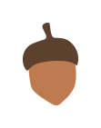
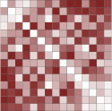
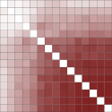
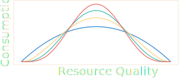
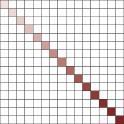
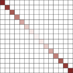

University of Chicago
Department of Ecology & Evolution
Matthew Michalska-Smith
- Stefano Allesina
- Trevor Price
- Mercedes Pascual
- Sarah Cobey
- Amos Maritan
Outline
- Ecological networks: a brief history
- Are ecological networks structuraly distinct?
- Do trophic roles have structural signatures?
- How ought competitve networks be structured?
- Where do we go from here?
Outline
- Ecological Networks: a brief history
- Networks as a unifying methodology
- Ecological networks
- Network structure
- Are ecological networks structuraly distinct?
- Do trophic roles have structural signatures?
- How ought competitve networks be structured?
- Where do we go from here?
Networks as a unifying methodology
Here we are reminded that in nature—Rachel Carson, Silent Spring
nothing exists alone
Networks as a unifying methodology
Ecological Networks
Ings & Hawes 2018
Network structure
- Size (number of nodes)
- Connectance (proportion of possible links realized)
- Degree distribution (how many connections does each node have?)
Network structure: Global
Nestedness
Modularity
Weitz, et al. 2013
Wright & Reeves 1992
Ulrich, Almeida-Neto, & Gotelli 2008
Newman 2006
Network structure: Local
Milo et al. 2002
Borrelli 2015
Outline
- Ecological Networks: a brief history
- Are ecological networks structuraly distinct?
- Framing the question and the solution
- Efforts thus far
- A computational challenge
- Do trophic roles have structural signatures?
- How ought competitve networks be structured?
- Where do we go from here?
- In collaboration with:
- Stefano Allesina
The Question:
Is it possible to distinguish networks of differing types by their structure?
- Interaction Type:
- the real-world-event being depicted by a network link
- Network Structure:
- the arrangement of connections within a network
The Solution:
Seeking generality, specificity, and scalability.
- Generality:
- Will our model work on new data?
- Specificity:
- Will our model fail when it is supposed to?
- Scalability:
- What is the proper level of disambiguation?
Generality
Specificity
Scalability
Efforts thus far
A computational challenge
- Data
- Ecological webs (51, 126, 35)
- Non-biological reference set
- Erdős-Rényi and Configuration Model Randomizations
- Code
- Analysis pipeline
- Easy-Add metrics
All hosted online at Github
Future directions
- Machine learning
- Gradient Boosted Regression Trees
- Continuing to add data
- Ecological data as available
- Enhancing/adding to non-ecological data
Outline
- Ecological Networks: a brief history
- Are ecological networks structuraly distinct?
- Do trophic roles have structural signatures?
- Defining trophic roles
- Introducing the methodology
- Visualizing Imbalance
- How ought competitve networks be structured?
- Where do we go from here?
- In collaboration with:
- Liz Sander
- Mercedes Pascual
- Stefano Allesina
Michalska-Smith & Sander, et al. 2018
Ecological Networks


Camerano 1880
introduction
What are parasites?
- Prey/predator body size ratio (?)
- Intimate, durable interactions (?)
- Number of hosts or prey attacked during a particular life-history stage
introduction: Food-Webs
methods: Food-Webs
|  |  |
 |
 |
 |
 |
|||||
|---|---|---|---|---|---|---|---|---|---|---|
| 0 | 0 | 1 | 1 | 1 | 0 | 0 | 1 | 0 | 0 | |
| 0 | 0 | 0 | 1 | 1 | 0 | 0 | 1 | 0 | 0 | |
| 0 | 0 | 0 | 0 | 0 | 1 | 1 | 1 | 1 | 1 |
| 0 | 0 | 0 | 0 | 0 | 1 | 1 | 1 | 0 | 1 |
| 0 | 0 | 0 | 0 | 0 | 0 | 0 | 1 | 0 | 1 | |
| 0 | 0 | 0 | 0 | 0 | 0 | 1 | 1 | 1 | 1 |
| 0 | 0 | 0 | 0 | 0 | 0 | 0 | 0 | 0 | 0 |
| 0 | 0 | 0 | 0 | 0 | 0 | 0 | 0 | 1 | 1 | |
| 0 | 0 | 0 | 0 | 0 | 0 | 0 | 0 | 0 | 0 |
| 0 | 0 | 0 | 0 | 0 | 0 | 0 | 0 | 0 | 0 |
|
|
|
|
|
||||||
|---|---|---|---|---|---|---|---|---|---|---|
| 0 | 0 | 1 | 1 | 1 | 0 | 0 | 1 | 0 | 0 | |
| 0 | 0 | 0 | 1 | 1 | 0 | 0 | 1 | 0 | 0 | |
| 0 | 0 | 0 | 0 | 0 | 1 | 1 | 1 | 1 | 1 |
| 0 | 0 | 0 | 0 | 0 | 1 | 1 | 1 | 0 | 1 |
| 0 | 0 | 0 | 0 | 0 | 0 | 0 | 1 | 0 | 1 | |
| 0 | 0 | 0 | 0 | 0 | 0 | 1 | 1 | 1 | 1 |
| 0 | 0 | 0 | 0 | 0 | 0 | 0 | 0 | 0 | 0 |
| 0 | 0 | 0 | 0 | 0 | 0 | 0 | 0 | 1 | 1 | |
| 0 | 0 | 0 | 0 | 0 | 1 | 1 | 1 | 0 | 0 |
| 0 | 0 | 0 | 0 | 0 | 1 | 1 | 1 | 0 | 0 |
methods: Group Model
- Also known as the stochastic blockmodel
- A generalized form of Modularity
- Seeks to find groups of strongly connecting species
methods: Group Model (Degree Corrected)
|
|
|
|
|
||||||
|---|---|---|---|---|---|---|---|---|---|---|
| 0 | 0 | 1 | 1 | 1 | 0 | 0 | 1 | 0 | 0 | |
| 0 | 0 | 0 | 1 | 1 | 0 | 0 | 1 | 0 | 0 | |
| 0 | 0 | 0 | 0 | 0 | 1 | 1 | 1 | 1 | 1 |
| 0 | 0 | 0 | 0 | 0 | 1 | 1 | 1 | 0 | 1 |
| 0 | 0 | 0 | 0 | 0 | 0 | 0 | 1 | 0 | 1 | |
| 0 | 0 | 0 | 0 | 0 | 0 | 1 | 1 | 1 | 1 |
| 0 | 0 | 0 | 0 | 0 | 0 | 0 | 0 | 0 | 0 |
| 0 | 0 | 0 | 0 | 0 | 0 | 0 | 0 | 1 | 1 | |
| 0 | 0 | 0 | 0 | 0 | 0 | 0 | 0 | 0 | 0 |
| 0 | 0 | 0 | 0 | 0 | 0 | 0 | 0 | 0 | 0 |
|
|
|
|
|
||||||
|---|---|---|---|---|---|---|---|---|---|---|
| 0 | 0 | 1 | 1 | 1 | 0 | 1 | 0 | 0 | 0 | |
| 0 | 0 | 0 | 1 | 1 | 0 | 1 | 0 | 0 | 0 | |
| 0 | 0 | 0 | 0 | 0 | 1 | 1 | 1 | 1 | 1 |
| 0 | 0 | 0 | 0 | 0 | 1 | 1 | 1 | 0 | 1 |
| 0 | 0 | 0 | 0 | 0 | 0 | 1 | 0 | 0 | 1 | |
| 0 | 0 | 0 | 0 | 0 | 0 | 1 | 1 | 1 | 1 |
| 0 | 0 | 0 | 0 | 0 | 0 | 0 | 0 | 1 | 1 | |
| 0 | 0 | 0 | 0 | 0 | 0 | 0 | 0 | 0 | 0 |
| 0 | 0 | 0 | 0 | 0 | 0 | 0 | 0 | 0 | 0 |
| 0 | 0 | 0 | 0 | 0 | 0 | 0 | 0 | 0 | 0 |
|
|
|
|
|
||||||
|---|---|---|---|---|---|---|---|---|---|---|
| 0 | 0 | 0 | 0 | 1 | 1 | 1 | 1 | 0 | 0 | |
| 0 | 0 | 0 | 0 | 0 | 1 | 1 | 1 | 0 | 0 | |
| 0 | 0 | 0 | 0 | 0 | 0 | 0 | 0 | 0 | 0 |
| 0 | 0 | 0 | 0 | 0 | 0 | 0 | 0 | 0 | 0 | |
| 0 | 1 | 0 | 1 | 0 | 1 | 0 | 0 | 1 | 1 |
| 0 | 1 | 0 | 0 | 0 | 1 | 0 | 0 | 1 | 1 |
| 0 | 0 | 0 | 0 | 0 | 1 | 0 | 0 | 0 | 1 | |
| 0 | 1 | 0 | 1 | 0 | 1 | 0 | 0 | 0 | 1 |
| 0 | 0 | 0 | 0 | 0 | 0 | 0 | 0 | 0 | 0 |
| 0 | 0 | 0 | 1 | 0 | 0 | 0 | 0 | 0 | 1 |
methods: Imbalance
|
|
|
|
|
|
|
|
|
|
|
|
|
|
|
|
|
|
|
|
|
|
|
|
|
| p-value | ||
|---|---|---|
| Parasites | 0.667 | 0.089 |
| Consumers | 0.4 | 0.533 |
| Herbivores | 0.6 | 0.158 |
| Primary Producers | 1.0 | 0.022 |
| Overall | 0.4 | 0.033 |
|
|
|
|
|
| Parasites | 0.5 | 0.8 |
| Consumers | 1 | 0.017 |
| Herbivores | 1 | 0.017 |
| Primary Producers | 0.5 | 0.8 |
| Overall | 0.5 | 0.004 |
methods: Data
- 7 Large, well-resolved, marine/estuarine food-webs
- With/without Concomitant predation
- Each species categorized:
- Primary Producer
- Herbivore
- Parasite
- Consumers
results: Imbalance
| Concomitant Links | Degree Corrected | g | Primary Producers | Herbivores | Consumers | Parasites | Overall |
|---|---|---|---|---|---|---|---|
| No | No | 2 | 0.895*** | 0.737*** | 0.491*** | 0.421 | 0.246*** |
| 3 | 0.826** | 0.589 | 0.331*** | 0.260 | 0.120*** | ||
| 5 | 0.757*** | 0.551*** | 0.628*** | 0.430*** | 0.307*** | ||
| 10 | 0.585* | 0.448*** | 0.439*** | 0.445*** | 0.214*** | ||
| Yes | 2 | 0.874 | 0.692 | 0.660*** | 0.449*** | 0.397*** | |
| 3 | 0.815 | 0.565 | 0.381*** | 0.521*** | 0.250*** | ||
| 5 | 0.689 | 0.350 | 0.289*** | 0.559*** | 0.109*** | ||
| 10 | 0.487 | 0.145 | 0.244*** | 0.138*** | 0.027*** | ||
| Yes | No | 2 | 0.898** | 0.745*** | 0.912*** | 0.555*** | 0.555*** |
| 3 | 0.839** | 0.598 | 0.835*** | 0.603*** | 0.370*** | ||
| 5 | 0.731 | 0.440* | 0.702*** | 0.710*** | 0.327*** | ||
| 10 | 0.702*** | 0.284*** | 0.582*** | 0.343*** | 0.164*** | ||
| Yes | 2 | 0.874 | 0.709*** | 0.812*** | 0.609*** | 0.537*** | |
| 3 | 0.833** | 0.609*** | 0.564*** | 0.515*** | 0.282*** | ||
| 5 | 0.716 | 0.360 | 0.365*** | 0.506*** | 0.173*** | ||
| 10 | 0.451 | 0.198*** | 0.364*** | 0.445*** | 0.114*** |
| Concomitant Links | Degree Corrected | g | Primary Producers | Herbivores | Consumers | Parasites | Overall |
|---|---|---|---|---|---|---|---|
| No | No | 2 | 0.895*** | 0.737*** | 0.491*** | 0.421 | 0.246*** |
| 3 | 0.826** | 0.589 | 0.331*** | 0.260 | 0.120*** | ||
| 5 | 0.757*** | 0.551*** | 0.628*** | 0.430*** | 0.307*** | ||
| 10 | 0.585* | 0.448*** | 0.439*** | 0.445*** | 0.214*** | ||
| Yes | 2 | 0.874 | 0.692 | 0.660*** | 0.449*** | 0.397*** | |
| 3 | 0.815 | 0.565 | 0.381*** | 0.521*** | 0.250*** | ||
| 5 | 0.689 | 0.350 | 0.289*** | 0.559*** | 0.109*** | ||
| 10 | 0.487 | 0.145 | 0.244*** | 0.138*** | 0.027*** | ||
| Yes | No | 2 | 0.898** | 0.745*** | 0.912*** | 0.555*** | 0.555*** |
| 3 | 0.839** | 0.598 | 0.835*** | 0.603*** | 0.370*** | ||
| 5 | 0.731 | 0.440* | 0.702*** | 0.710*** | 0.327*** | ||
| 10 | 0.702*** | 0.284*** | 0.582*** | 0.343*** | 0.164*** | ||
| Yes | 2 | 0.874 | 0.709*** | 0.812*** | 0.609*** | 0.537*** | |
| 3 | 0.833** | 0.609*** | 0.564*** | 0.515*** | 0.282*** | ||
| 5 | 0.716 | 0.360 | 0.365*** | 0.506*** | 0.173*** | ||
| 10 | 0.451 | 0.198*** | 0.364*** | 0.445*** | 0.114*** |
results: Condensed Graphs
Summary
- Ecological classifications have statistical meaning
- Especially for Consumers and Parasites
- (beyond simple degree distribution)
- But this is not always the strongest source of variance
- Further structure to be found
- Concomitant links important
- Next step: Identify the most explanatory properties of homogenous groups
Outline
- Ecological Networks: a brief history
- Are ecological networks structuraly distinct?
- Do trophic roles have structural signatures?
- How ought competitve networks be structured?
- The traditional dogma
- Generalizing for more species
- Separating the effects of intra- vs. interspecific interactions
- Where do we go from here?
- In collaboration with:
- György Barabás
- Stefano Allesina
Barabás, Michalska-Smith, & Allesina 2017
Dogma
Intraspecific competition must be greater than interspecific competition for stable coexistence
$\frac{\mathrm{d} N_1}{\mathrm{d} t}$$=$
$N_1$$($$r_1$$-$
$a_{12}$$N_2$$-$$a_{11}$
$N_1$$)$
$\frac{\mathrm{d} N_2}{\mathrm{d} t}$$=$
$N_2$$($$r_2$$-$
$a_{21}$$N_1$$-$$a_{22}$
$N_2$$)$
Condition for coexistence:
$a_{12}a_{21}$$<$$a_{11}a_{22}$Chesson 2000
Dogma
$\frac{\mathrm{d} \boldsymbol{N}}{\mathrm{d} t}$$=$
$\boldsymbol{N}$ $($$\boldsymbol{r}$
+ $\boldsymbol{a}$$\boldsymbol{N}$$)$
$\boldsymbol{a}$=$- \begin{pmatrix} 9 & 1 \\ 13 & 2 \end{pmatrix}$
$a_{12}a_{21}$$<$$a_{11}a_{22}$
What about $3$ species?
$\frac{\mathrm{d} \boldsymbol{N}}{\mathrm{d} t}$$=$
$\boldsymbol{N}$$($$\boldsymbol{r}$
+$\boldsymbol{a}$$\boldsymbol{N}$$)$
$\boldsymbol{a}$=$- \begin{pmatrix} 10 & 9 & 5 \\ 9 & 10 & 9 \\ 5 & 9 & 10 \end{pmatrix}$
Intra $>$ inter for all pairs ... yet no coexistence
What about $3$ species?
$\frac{\mathrm{d} \boldsymbol{N}}{\mathrm{d} t}$$=$
$\boldsymbol{N}$$($$\boldsymbol{r}$
+$\boldsymbol{a}$$\boldsymbol{N}$$)$
$\boldsymbol{a}$=$- \begin{pmatrix} 10 & 7 & 12 \\ 15 & 10 & 8 \\ 7 & 11 & 10 \end{pmatrix}$
Intra$<$inter for species $1$ & $2$ ... yet coexistence
Generalization to large $n$
Are there generalizations for the relationship of intra- to interspecific competition for more than 2 species?
in particular, are their signatures for the most extreme cases?

Generalization to large $n$


The additive effect of intra-specific competition
InterspecificIntraspecific
StabilizingDestabilizing



Summary
- Two species coexistence: simple and intuitive
- But this rule does not hold for more species
- Patterns to exploit (for symmetric case):
- Clustering most stable
- Nested least stable
- Intraspecific competition follows same patterns as inter-
- Asymmetric competition much more difficult to study
Outline
- Ecological Networks: a brief history
- Are ecological networks structuraly distinct?
- Do trophic roles have structural signatures?
- How ought competitve networks be structured?
- Where do we go from here?
- Synthesis
- Extension
Synthesis
- Ecological networks are diverse and complex
- But there are detectable patterns with real, ecological implications
- Ecological interaction networks have large within-type variation and are more structurally similar than previously appreciated
- Trophic roles have structural signatures in food-webs
- The extreme cases of competition network structure have clear ecological corollaries
Extension
Pilosof, et al. 2017
Acknowledgements
| Adam | Brenon | Evan | Jody | Marcos | Sarah | |
| Agata | Carlos | Finnigan | John | Mariah | Simon | |
| Alex | Chad | Frank | Jose | Mark | Stefano | |
| Allison | Cody | Grzesz | Katherine | Mary | Steve | |
| Amos | Connie | Gyuri | Kimbra | Mercedes | Supriya | |
| Angelo | Courtney | Iuri | Laura | Misha | Sylvia | |
| Arvind | Dan | Jacopo | Lili | Monika | Trevor | |
| Audrey | Dave | Jakez | Linnea | Phillip | Tyler | |
| Ben | Elisa | Jared | Liz | Rahul | Yoseop | |
| Bonnie | Emilio | Jeff | Madeline | Roberto | Zach | etc. |